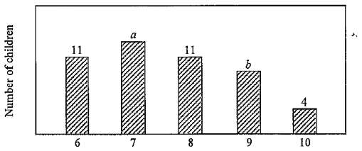

統計學 · 中位數與平均數

中位數為 $7.5$，而年齡只有整數值，故中間兩個數據必定是 $7$ 和 $8$。
累積至 $6$ 歲有 $11$ 人，至 $7$ 歲有 $11+a$ 人，所以第 $\frac{N}{2}$ 個數據是 $7$ 歲，即
$$\frac{N}{2}=11+a$$
$$N=11+a+11+b+4=26+a+b$$
代入 $\dfrac{N}{2}=11+a$：$26+a+b=22+2a$，即 $a=b+4$。
由 $a=b+4 \gt 11$ 得 $b \gt 7$，配合 $b \lt 10$ 得 $b=8$ 或 $9$。
故 $(a,b)=(12,8)$ 或 $(13,9)$。
取 $7,8,9,10$ 歲。以 $(a,b)=(12,8)$ 為例，加入後各年齡人數為 $11,13,12,9,5$，共 $50$ 人。
第 $25$、$26$ 個數據都是 $8$ 歲，故最大中位數為 $8$。
（用 $(13,9)$ 檢驗：同樣得中位數 $8$。）
取 $6,7,8,9$ 歲。$(a,b)=(12,8)$ 時共有 $50$ 人，總年齡為
$$12(6)+13(7)+12(8)+9(9)+4(10)=380$$
$$\text{平均數}=\frac{380}{50}=7.6$$
若 $(a,b)=(13,9)$，平均數為 $\dfrac{396}{52}\approx7.615 \gt 7.6$，故最小平均數為 $7.6$。